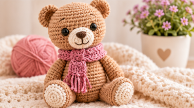

El mundo de los amigurumis

Los amigurumis son pequeños muñecos tejidos mediante la técnica del crochet. Su origen está en Japón y se han convertido en una forma muy popular de artesanía.
¿Qué materiales necesitamos?
- Hilo de algodón o lana.
- Aguja de crochet.
- Relleno de fibra sintética.
- Ojos de seguridad o hilo para bordarlos.
- Aguja lanera y tijeras.
La técnica básica
Para realizar un amigurumi se suele trabajar en espiral, utilizando principalmente puntos bajos y aumentos y disminuciones para dar forma a las diferentes partes del muñeco.
Las piezas se rellenan con fibra sintética y posteriormente se unen para formar el personaje completo.
Deja volar tu imaginación
Podemos crear animales, personajes, flores y pequeños objetos decorativos. Lo más interesante de los amigurumis es que cada creación puede tener su propia personalidad.